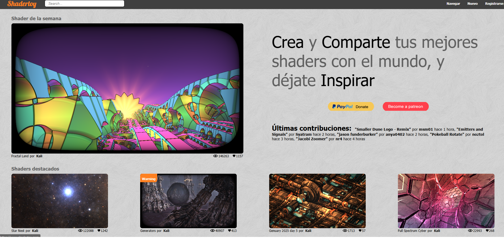
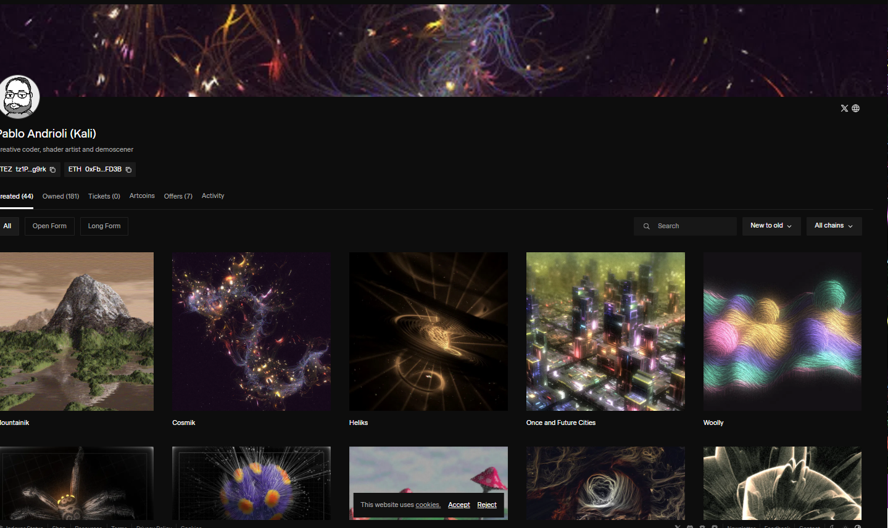
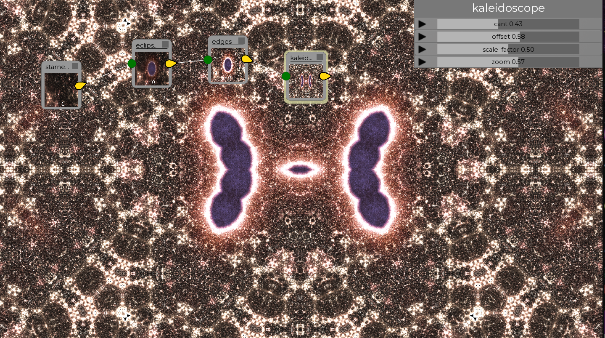
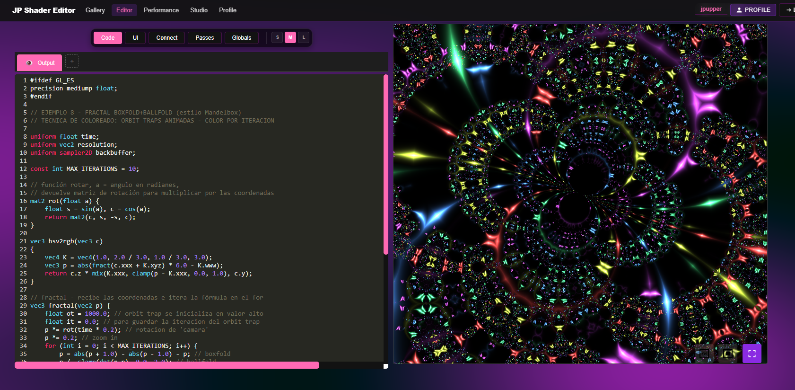

Contribución a Guipper
Pablo fue un contribuidor fundamental en el software Guipper, aportando su visión técnica y artística para empujar los límites de la creación visual.
La luz infinita en el código
Hay mentes que logran ver el universo en números, y hay almas que logran traducir esos números en pura belleza. Pablo Román Andrioli, conocido en cada rincón del mundo digital como Kali, poseía ambas.
Fue, sin lugar a dudas, la persona que más entendía de fractales en el mundo, pero para quienes tuvieron el privilegio de conocerlo, fue ante todo una persona excelente, de una sensibilidad artística inmensa y un corazón profundamente amoroso.
Kali no solo navegó por el infinito; lo codificó. Es y será siempre la referencia eminente e ineludible cuando se habla de programación gráfica, raymarching, shaders y lo que muchos de sus colegas llamaban, con total reverencia, su "magia oscura".

Su galería principal y el hogar de su "magia oscura". Gran parte de su código abierto y experimentos visuales.
Ver Perfil
Diferentes facetas de su obra generativa publicadas bajo sus reconocidos seudónimos.
Su genialidad lo llevó a inventar la fórmula fractal más corta de la historia, demostrando que la inmensidad del cosmos podía resumirse en unas pocas líneas de código brillante.
// The Star Nest pattern
for (int i=0; iPablo fue un contribuidor fundamental en el software Guipper, aportando su visión técnica y artística para empujar los límites de la creación visual.

Sus cimientos matemáticos llegaron a ser utilizados para dar vida a los mundos de Guardianes de la Galaxia. Su trabajo es referenciado en la Universidad de California (UCSD).
Ports de Star Nest para Godot Engine, Defold y múltiples análisis técnicos en la comunidad.
Ayudó a que Mandelbulb 3D se convirtiera en una herramienta de código abierto, permitiendo que innumerables artistas exploraran dimensiones fractales.

El lado generoso de Pablo: enseñando a otros a navegar el infinito mediante sus tutoriales de Kodelife y recursos abiertos.
Acceder a TutorialesLos sonidos que lo acompañaban mientras codificaba sus mundos.